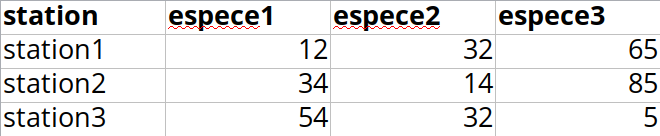
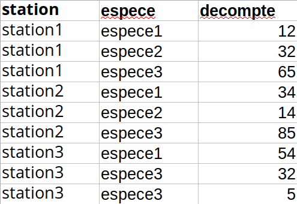

| religion | below10k | from10to20k | from20to30k | from30to40k |
|---|---|---|---|---|
| Agnostic | 27 | 34 | 60 | 81 |
| Atheist | 12 | 27 | 37 | 52 |
| Buddhist | 27 | 21 | 30 | 34 |
| Catholic | 418 | 617 | 732 | 670 |
| Don’t know/refused | 15 | 14 | 15 | 11 |
| Evangelical Prot | 575 | 869 | 1064 | 982 |
Capsule 4
Objectifs de la capsule
À la fin de cette capsule, vous serez en mesure de:
- Comprendre qu’est-ce qu’un bon jeu de données.
- Faire la lecture des principaux types de fichiers .dat, .csv, .txt.
- Comprendre ce qu’est-ce qu’un data frame et connaître les principales fonctions utilisées sur cette classe.
- Exporter des données dans un fichier depuis R.
Capsule vidéo
Télécharger le script R de la vidéo (Faire bouton droit -> enregistrer sous…)
Exercices
Veuillez noter qu’il est possible d’avoir plus d’une bonne réponse par question. Vous pouvez reprendre chaque exercice grâce aux boutons “Start Over” ou “Try Again” Le bouton “hint”” est là pour être utilisé!
Les jeux de données
Le jeux de données suivant (produit par le Pew Research Center) explore la relation entre le salaire et la religion aux États-Unis.
Importer des données dans R
En utilisant la fonction read.table(), écrivez une ligne de code qui permet de lire correctement le fichier BIO1006_H2018_Echantillon_espace.dat dont la structure ressemble à ceci.
Ne pas changer le nom du fichier, seulement remplacer ... avec la bonne réponse.
couleur_yeux taille_cm nombre_choisi cours_par_session peur_des_biostats piece_monnaie genre
Noir 174 92 6 Non Face Fille
Bleu 168 20 5 Pas_sur Face Fille
Noisette 158 11 5 Pas_sur Face Fille
Autre 177 99 5 Non Face Gars
Noisette 152 87 5 Pas_sur Pile Fille
Bleu 177 7 5 Non Pile Gars
Bleu 163 25 5 Pas_sur Pile Fille
Noir 186 27 4 Non Pile Gars
Bleu 150 87 5 Non Face GarsLes data frame
Le data frame sondage_bio1006 qui présente le résultat d’un sondage effectué dans le cours de biostatistiques BIO-1006 du programme de baccalauréat en Biologie de l’Université Laval.
Code
sondage_bio1006 couleur_yeux taille_cm nombre_choisi cours_par_session peur_des_biostats
1 Noir 174.00 92 6 Non
2 Bleu 168.00 20 5 Pas_sur
3 Noisette 158.00 11 5 Pas_sur
4 Autre 177.00 99 5 Non
5 Noisette 152.00 87 5 Pas_sur
6 Bleu 177.00 7 5 Non
7 Bleu 163.00 25 5 Pas_sur
8 Noir 186.00 27 4 Non
9 Bleu 150.00 87 5 Non
10 Noisette 170.00 6 5 Non
11 Noir 165.00 88 5 Pas_sur
12 Bleu 180.00 6 3 Oui
13 Bleu 153.00 42 4 Pas_sur
14 Bleu 177.00 9 5 Non
15 Bleu 1.53 8 5 Pas_sur
16 Bleu 156.00 7 5 Pas_sur
17 Autre 152.00 27 4 Pas_sur
18 Noisette 165.00 20 4 Oui
19 Noisette 168.00 7 5 Non
20 Noisette 158.00 9 5 Oui
21 Noir 173.00 8 5 Oui
22 Autre 177.00 0 4 Pas_sur
23 Noisette 164.00 1 5 Pas_sur
24 Autre 165.54 11 5 Non
25 Noisette 170.00 4 5 Pas_sur
26 Bleu 155.00 22 5 Non
27 Autre 195.00 69 5 Non
28 Autre 174.00 66 4 Pas_sur
29 Noisette 183.00 18 5 Pas_sur
30 Autre 164.00 66 4 Pas_sur
31 Bleu 153.00 1 5 Non
32 Bleu 173.00 13 4 Pas_sur
33 Bleu 161.00 4 5 Non
34 Autre 170.00 14 4 Non
35 Autre 164.00 16 5 Pas_sur
36 Noisette 152.00 7 4 Non
37 Bleu 170.00 4 5 Oui
38 Noisette 170.00 72 4 Pas_sur
39 Bleu 159.00 18 4 Pas_sur
40 Bleu 182.00 42 5 Pas_sur
41 Autre 161.00 44 5 Non
42 Noisette 186.00 5 5 Non
43 Bleu 168.00 69 5 Non
44 Bleu 175.00 1 6 Pas_sur
45 Bleu 162.00 24 5 Non
46 Autre 164.00 29 5 Pas_sur
47 Bleu 195.68 16 5 Pas_sur
48 Bleu 155.00 22 5 Oui
49 Noir 182.00 42 4 Non
50 Noisette 180.00 2 4 Oui
51 Noisette 166.00 28 6 Non
52 Noisette 173.00 94 4 Oui
53 Autre 177.00 7 5 Non
54 Noir 161.00 5 4 Pas_sur
55 Bleu 180.00 14 4 Pas_sur
56 Noir 177.00 6 5 Oui
57 Bleu 160.00 34 4 Oui
58 Bleu 165.00 26 4 Pas_sur
59 Noir 165.00 12 5 Pas_sur
60 Noisette 157.00 66 4 Pas_sur
piece_monnaie genre
1 Face Fille
2 Face Fille
3 Face Fille
4 Face Gars
5 Pile Fille
6 Pile Gars
7 Pile Fille
8 Pile Gars
9 Face Gars
10 Pile Fille
11 Pile Fille
12 Pile Gars
13 Face Fille
14 Pile Fille
15 Pile Autre
16 Pile Fille
17 Pile Fille
18 Pile Fille
19 Face Fille
20 Pile Fille
21 Pile Fille
22 Face Gars
23 Pile Fille
24 Pile Fille
25 Face Fille
26 Face Fille
27 Face Gars
28 Face Fille
29 Pile Gars
30 Pile Fille
31 Face Fille
32 Pile Fille
33 Pile Fille
34 Face Fille
35 Pile Fille
36 Pile Fille
37 Face Fille
38 Pile Fille
39 Face Fille
40 Face Gars
41 Pile Fille
42 Pile Gars
43 Pile Gars
44 Pile Gars
45 Face Fille
46 Pile Fille
47 Face Fille
48 Face Fille
49 Pile Gars
50 Face Gars
51 Face Fille
52 Face Gars
53 Pile Gars
54 Face Fille
55 Pile Fille
56 Face Gars
57 Face Fille
58 Pile Fille
59 Face Fille
60 Face FilleUtilisez la fonction head pour faire afficher les 4 premières lignes du data frame nommé sondage_bio1006.
Matériel accompagnateur
Qu’est-ce qu’un bon jeu de données?
Avant de voir comment importer des données dans R, il est bon de bien comprendre ce qu’est un bon jeu de données. Avoir un jeu de données bien organisé est nécessaire pour faire des analyses statistiques ou des graphiques. Il y a deux propriétés fondamentales qui caractérisent un bon jeu de données:
- Chaque ligne représente une observation.
- Chaque colonne représente une variable.
Imaginons que vous devez faire le recensement de certaines espèces animales à trois différentes stations (station1, station2 et station3). À chacune d’elles, il y a trois espèces différentes (espece1, espece2 et espece3). Notre réflexe est de créer un tableau de données comme suit, avec une colonne par espèce où chaque chiffre correspond au dénombrement noté. C’est ce qu’on appelle un tableau de données au format large (wide layout en anglais).

Le problème avec cette structure est qu’il y a trois colonnes pour représenter les espèces. Les colonnes espece1, espece2 et espece3 ne sont pas des variables, mais plutôt des valeurs d’une variable/colonne que l’on pourrait nommer tout simplement espece. Pour créer un jeu de données bien organisé, il faut retenir que chaque colonne représente une variable. C’est ce qu’on appelle le format long (long layout en anglais).
Astuce
N’oubliez pas qu’il faut éviter d’utiliser des caractères accentués dans les noms de variables. C’est pourquoi on nommera la colonne espece et non espèce.
La façon appropriée de représenter ces données consiste à créer seulement trois colonnes:
- Une colonne station contenant le nom de la station. Même si celle-ci existait déjà, remarquez comment les valeurs seront dupliquées autant que nécessaire!
- Une colonne espece contenant les noms des espèces. Remarquez l’omission volontaire des accents, nous y reviendrons.
- Une colonne decompte contenant le dénombrement de chacune des espèces à chaque station.

Importer des données dans R
La plupart du temps, les données que vous aurez à importer dans R seront présentées dans de simples fichiers texte. Les extensions de ces fichiers les plus souvent rencontrées sont: .txt, .dat, .tab et .csv. (Note: il est plus simple d’entrer les données dans un tabulateur de type “Excel” ou Google sheets et de sauvegarder le fichier dans ces formats). La fonction R de base à utiliser pour ouvrir ces fichiers est read.table(). Les principaux paramètres de cette fonction que vous devriez connaîtres par coeur sont (help(read.table)):
file: Chemin d’accès vers le fichier à ouvrir sur votre ordinateur.skip: Nombre de lignes à passer/sauter au début de fichier avant de commencer à lire les données. En effet les premières lignes des fichiers de données sont souvent des commentaires sur le contexte, l’échantillonnage, etc. (métadonnées).header: Est-ce que la première ligne de données du fichier contient les noms des colonnes? C’est le cas la grande majorité du temps!dec: Caractère utilisé pour les valeurs décimales (“.” en Anglais ou “,” en Français).sep: Caractère utilisé pour séparer les colonnes de variables.
Note sur les chemins d’accès (file): La structure du chemin d’accès à un fichier dépend de votre système d’exploitation. Les deux exemples suivants montrent quels pourraient être les chemins d’accès pour un fichier texte nommé nom_du_fichier.txt se situant sur le bureau (Desktop) d’ordinateur Linux/Mac et Windows. Ici, nom_utilisateur correspond à votre nom d’utilisateur sur votre système! De plus, notez que vous devriez toujours utiliser le signe / plutôt que \ dans un chemin d’accès.
Linux/Mac
/home/nom_utilisateur/Desktop/nom_du_fichier.txtMicrosoft Windows
c:/Users/nom_utilisateur/Desktop/nom_du_fichier.txt
Astuce
La fonction read.table() est une fonction générique qui peut lire la majorité des fichiers texte. Il existe cependant certaines variantes avec des valeurs de paramètres déjà spécifiées pour lire différents types de fichiers afin de nous faciliter la vie. Les deux fonctions les plus souvent utilisées sont:
read.csv(): Pour lire les fichiers où le marqueur de décimale est un point “.” et les colonnes sont séparées par une virgule “,” (système générique anglais).read.csv2(): Pour lire les fichiers où le marqueur de décimale est une virgule “,” et les colonnes sont séparées par un point virgule “;”. Cette fonction devrait être utilisée si votre système d’exploitation est configuré en Français.
Pour nous familiariser avec ces différents paramètres 1, nous utiliserons un jeu de données contenant 7 variables (colonnes) et 60 observations (lignes). Ce jeu de données est le résultat d’un sondage effectué dans le cours de biostatistiques BIO-1006 du programme de baccalauréat en Biologie de l’Université Laval. Le jeu de données est dans un fichier nommé BIO1006_H2018_Echantillon.csv.
couleur_yeux: Couleur des yeux du répondant.taille_cm: Taille en cm du répondant.nombre_choisi: Nombre choisi par le répondant (entre 0 et 99).cours_par_session: Nombre de cours suivis à la session du répondant.peur_des_biostats: Réponse à la question “Est-ce que le répondant a peur des biostatistiques” (non, pas sur, oui).piece_monnaie: Résultat du lancer d’une pièce de monnaie (pile, face).genre: Genre du répondant (gars, fille, autre).
Avant d’importer les données dans R, il est important d’ouvrir le fichier BIO1006_H2018_Echantillon.csv pour explorer sa structure. Une fois ouvert dans votre éditeur de texte préféré, vous observerez les éléments suivants:
- Il n’y a pas de ligne à passer ou sauter en début du fichier.
- La première ligne correspond aux noms des variables.
- Les colonnes sont séparées par une virgule (“,”).
- Le séparateur de décimales est le point (“.”).
En connaissant ces éléments, il est possible de paramétrer la fonction read.table() correctement pour importer les données. La commande suivante lit les données contenues dans le fichier pour les assigner 2 dans une variable nommée df.
Code
df <- read.table("../data/BIO1006_H2018_Echantillon.csv", header = TRUE, sep = ",", dec = ".")La classe de l’objet df qui a été créé est un data.frame. Un data frame (ou structure de données) est simplement un tableau de données où chaque colonne peut avoir un type différent (numeric, character, date, etc.).
Code
class(df)[1] "data.frame"En regardant le contenu de df, on constate que la classe de la variable couleur_yeux est factor alors que celle de la variable taille_cm est numeric (dbl veut dire double pour double précision, du jargon informatique concernant les valeurs numériques).
Code
df couleur_yeux taille_cm nombre_choisi cours_par_session peur_des_biostats
1 Noir 174.00 92 6 Non
2 Bleu 168.00 20 5 Pas_sur
3 Noisette 158.00 11 5 Pas_sur
4 Autre 177.00 99 5 Non
5 Noisette 152.00 87 5 Pas_sur
6 Bleu 177.00 7 5 Non
7 Bleu 163.00 25 5 Pas_sur
8 Noir 186.00 27 4 Non
9 Bleu 150.00 87 5 Non
10 Noisette 170.00 6 5 Non
11 Noir 165.00 88 5 Pas_sur
12 Bleu 180.00 6 3 Oui
13 Bleu 153.00 42 4 Pas_sur
14 Bleu 177.00 9 5 Non
15 Bleu 1.53 8 5 Pas_sur
16 Bleu 156.00 7 5 Pas_sur
17 Autre 152.00 27 4 Pas_sur
18 Noisette 165.00 20 4 Oui
19 Noisette 168.00 7 5 Non
20 Noisette 158.00 9 5 Oui
21 Noir 173.00 8 5 Oui
22 Autre 177.00 0 4 Pas_sur
23 Noisette 164.00 1 5 Pas_sur
24 Autre 165.54 11 5 Non
25 Noisette 170.00 4 5 Pas_sur
26 Bleu 155.00 22 5 Non
27 Autre 195.00 69 5 Non
28 Autre 174.00 66 4 Pas_sur
29 Noisette 183.00 18 5 Pas_sur
30 Autre 164.00 66 4 Pas_sur
31 Bleu 153.00 1 5 Non
32 Bleu 173.00 13 4 Pas_sur
33 Bleu 161.00 4 5 Non
34 Autre 170.00 14 4 Non
35 Autre 164.00 16 5 Pas_sur
36 Noisette 152.00 7 4 Non
37 Bleu 170.00 4 5 Oui
38 Noisette 170.00 72 4 Pas_sur
39 Bleu 159.00 18 4 Pas_sur
40 Bleu 182.00 42 5 Pas_sur
41 Autre 161.00 44 5 Non
42 Noisette 186.00 5 5 Non
43 Bleu 168.00 69 5 Non
44 Bleu 175.00 1 6 Pas_sur
45 Bleu 162.00 24 5 Non
46 Autre 164.00 29 5 Pas_sur
47 Bleu 195.68 16 5 Pas_sur
48 Bleu 155.00 22 5 Oui
49 Noir 182.00 42 4 Non
50 Noisette 180.00 2 4 Oui
51 Noisette 166.00 28 6 Non
52 Noisette 173.00 94 4 Oui
53 Autre 177.00 7 5 Non
54 Noir 161.00 5 4 Pas_sur
55 Bleu 180.00 14 4 Pas_sur
56 Noir 177.00 6 5 Oui
57 Bleu 160.00 34 4 Oui
58 Bleu 165.00 26 4 Pas_sur
59 Noir 165.00 12 5 Pas_sur
60 Noisette 157.00 66 4 Pas_sur
piece_monnaie genre
1 Face Fille
2 Face Fille
3 Face Fille
4 Face Gars
5 Pile Fille
6 Pile Gars
7 Pile Fille
8 Pile Gars
9 Face Gars
10 Pile Fille
11 Pile Fille
12 Pile Gars
13 Face Fille
14 Pile Fille
15 Pile Autre
16 Pile Fille
17 Pile Fille
18 Pile Fille
19 Face Fille
20 Pile Fille
21 Pile Fille
22 Face Gars
23 Pile Fille
24 Pile Fille
25 Face Fille
26 Face Fille
27 Face Gars
28 Face Fille
29 Pile Gars
30 Pile Fille
31 Face Fille
32 Pile Fille
33 Pile Fille
34 Face Fille
35 Pile Fille
36 Pile Fille
37 Face Fille
38 Pile Fille
39 Face Fille
40 Face Gars
41 Pile Fille
42 Pile Gars
43 Pile Gars
44 Pile Gars
45 Face Fille
46 Pile Fille
47 Face Fille
48 Face Fille
49 Pile Gars
50 Face Gars
51 Face Fille
52 Face Gars
53 Pile Gars
54 Face Fille
55 Pile Fille
56 Face Gars
57 Face Fille
58 Pile Fille
59 Face Fille
60 Face FilleLes data frame
Voici certaines fonctions très utiles pour travailler avec les data frame, illustrées ici en utilisant le jeu de données contenu dans la variable df.
Code
names(df) # Affiche les noms de colonnes (des variables)[1] "couleur_yeux" "taille_cm" "nombre_choisi"
[4] "cours_par_session" "peur_des_biostats" "piece_monnaie"
[7] "genre" Code
str(df) # Affiche la structure du data frame; une sorte de résumé des variables'data.frame': 60 obs. of 7 variables:
$ couleur_yeux : chr "Noir" "Bleu" "Noisette" "Autre" ...
$ taille_cm : num 174 168 158 177 152 177 163 186 150 170 ...
$ nombre_choisi : int 92 20 11 99 87 7 25 27 87 6 ...
$ cours_par_session: int 6 5 5 5 5 5 5 4 5 5 ...
$ peur_des_biostats: chr "Non" "Pas_sur" "Pas_sur" "Non" ...
$ piece_monnaie : chr "Face" "Face" "Face" "Face" ...
$ genre : chr "Fille" "Fille" "Fille" "Gars" ...Code
nrow(df) # Nombre de lignes (observations)[1] 60Code
ncol(df) # Nombre de colonnes (variables)[1] 7Code
head(df) # Affiche les 6 premières lignes (observations) couleur_yeux taille_cm nombre_choisi cours_par_session peur_des_biostats
1 Noir 174 92 6 Non
2 Bleu 168 20 5 Pas_sur
3 Noisette 158 11 5 Pas_sur
4 Autre 177 99 5 Non
5 Noisette 152 87 5 Pas_sur
6 Bleu 177 7 5 Non
piece_monnaie genre
1 Face Fille
2 Face Fille
3 Face Fille
4 Face Gars
5 Pile Fille
6 Pile GarsCode
tail(df) # Affiche les 6 dernières lignes (observations) couleur_yeux taille_cm nombre_choisi cours_par_session peur_des_biostats
55 Bleu 180 14 4 Pas_sur
56 Noir 177 6 5 Oui
57 Bleu 160 34 4 Oui
58 Bleu 165 26 4 Pas_sur
59 Noir 165 12 5 Pas_sur
60 Noisette 157 66 4 Pas_sur
piece_monnaie genre
55 Pile Fille
56 Face Gars
57 Face Fille
58 Pile Fille
59 Face Fille
60 Face FilleIl est important de comprendre que chaque variable (colonne) d’un data frame est en fait un vecteur de données. Pour accéder à ces vecteurs, il suffit d’utiliser le signe de dollar $ avec le nom du data frame et de la variable. Dans l’exemple suivant, on extrait la variable (vecteur) taille_cm du data frame df.
Code
df$taille_cm [1] 174.00 168.00 158.00 177.00 152.00 177.00 163.00 186.00 150.00 170.00
[11] 165.00 180.00 153.00 177.00 1.53 156.00 152.00 165.00 168.00 158.00
[21] 173.00 177.00 164.00 165.54 170.00 155.00 195.00 174.00 183.00 164.00
[31] 153.00 173.00 161.00 170.00 164.00 152.00 170.00 170.00 159.00 182.00
[41] 161.00 186.00 168.00 175.00 162.00 164.00 195.68 155.00 182.00 180.00
[51] 166.00 173.00 177.00 161.00 180.00 177.00 160.00 165.00 165.00 157.00
Astuce
Dans RStudio, une fois que vous avez tapé le nom du data frame et le signe dollar (df$), vous pouvez appuyer sur la touche tabulation (TAB; -> |) de votre clavier pour afficher la liste complète des variables contenues dans le data frame.
Puisque chaque colonne est un vecteur, on peut utiliser plusieurs fonctions que vous devriez déjà connaître3.
Code
class(df$taille_cm) # Quelle est la classe du vecteur[1] "numeric"Code
length(df$taille_cm) # Quelle est la longueur du vecteur[1] 60Code
mean(df$taille_cm) # Quelle est la moyenne du vecteur[1] 165.5792Il est facile de créer de nouvelles variables dans un data frame en utilisant l’opérateur $. Dans l’exemple suivant, une nouvelle variable taille_in représentant la taille en pouces (inches en anglais) est créée:
Code
# Conversion des centimètres en pouces
df$taille_po <- df$taille_cm * 0.393701
# Afficher les noms de variables dans df (notez la nouvelle colonne)
names(df)[1] "couleur_yeux" "taille_cm" "nombre_choisi"
[4] "cours_par_session" "peur_des_biostats" "piece_monnaie"
[7] "genre" "taille_po" Code
# Afficher le data frame avec la nouvelle variable (cliquez sur les flèches pour
# naviguer dans les colonnes).
df couleur_yeux taille_cm nombre_choisi cours_par_session peur_des_biostats
1 Noir 174.00 92 6 Non
2 Bleu 168.00 20 5 Pas_sur
3 Noisette 158.00 11 5 Pas_sur
4 Autre 177.00 99 5 Non
5 Noisette 152.00 87 5 Pas_sur
6 Bleu 177.00 7 5 Non
7 Bleu 163.00 25 5 Pas_sur
8 Noir 186.00 27 4 Non
9 Bleu 150.00 87 5 Non
10 Noisette 170.00 6 5 Non
11 Noir 165.00 88 5 Pas_sur
12 Bleu 180.00 6 3 Oui
13 Bleu 153.00 42 4 Pas_sur
14 Bleu 177.00 9 5 Non
15 Bleu 1.53 8 5 Pas_sur
16 Bleu 156.00 7 5 Pas_sur
17 Autre 152.00 27 4 Pas_sur
18 Noisette 165.00 20 4 Oui
19 Noisette 168.00 7 5 Non
20 Noisette 158.00 9 5 Oui
21 Noir 173.00 8 5 Oui
22 Autre 177.00 0 4 Pas_sur
23 Noisette 164.00 1 5 Pas_sur
24 Autre 165.54 11 5 Non
25 Noisette 170.00 4 5 Pas_sur
26 Bleu 155.00 22 5 Non
27 Autre 195.00 69 5 Non
28 Autre 174.00 66 4 Pas_sur
29 Noisette 183.00 18 5 Pas_sur
30 Autre 164.00 66 4 Pas_sur
31 Bleu 153.00 1 5 Non
32 Bleu 173.00 13 4 Pas_sur
33 Bleu 161.00 4 5 Non
34 Autre 170.00 14 4 Non
35 Autre 164.00 16 5 Pas_sur
36 Noisette 152.00 7 4 Non
37 Bleu 170.00 4 5 Oui
38 Noisette 170.00 72 4 Pas_sur
39 Bleu 159.00 18 4 Pas_sur
40 Bleu 182.00 42 5 Pas_sur
41 Autre 161.00 44 5 Non
42 Noisette 186.00 5 5 Non
43 Bleu 168.00 69 5 Non
44 Bleu 175.00 1 6 Pas_sur
45 Bleu 162.00 24 5 Non
46 Autre 164.00 29 5 Pas_sur
47 Bleu 195.68 16 5 Pas_sur
48 Bleu 155.00 22 5 Oui
49 Noir 182.00 42 4 Non
50 Noisette 180.00 2 4 Oui
51 Noisette 166.00 28 6 Non
52 Noisette 173.00 94 4 Oui
53 Autre 177.00 7 5 Non
54 Noir 161.00 5 4 Pas_sur
55 Bleu 180.00 14 4 Pas_sur
56 Noir 177.00 6 5 Oui
57 Bleu 160.00 34 4 Oui
58 Bleu 165.00 26 4 Pas_sur
59 Noir 165.00 12 5 Pas_sur
60 Noisette 157.00 66 4 Pas_sur
piece_monnaie genre taille_po
1 Face Fille 68.5039740
2 Face Fille 66.1417680
3 Face Fille 62.2047580
4 Face Gars 69.6850770
5 Pile Fille 59.8425520
6 Pile Gars 69.6850770
7 Pile Fille 64.1732630
8 Pile Gars 73.2283860
9 Face Gars 59.0551500
10 Pile Fille 66.9291700
11 Pile Fille 64.9606650
12 Pile Gars 70.8661800
13 Face Fille 60.2362530
14 Pile Fille 69.6850770
15 Pile Autre 0.6023625
16 Pile Fille 61.4173560
17 Pile Fille 59.8425520
18 Pile Fille 64.9606650
19 Face Fille 66.1417680
20 Pile Fille 62.2047580
21 Pile Fille 68.1102730
22 Face Gars 69.6850770
23 Pile Fille 64.5669640
24 Pile Fille 65.1732635
25 Face Fille 66.9291700
26 Face Fille 61.0236550
27 Face Gars 76.7716950
28 Face Fille 68.5039740
29 Pile Gars 72.0472830
30 Pile Fille 64.5669640
31 Face Fille 60.2362530
32 Pile Fille 68.1102730
33 Pile Fille 63.3858610
34 Face Fille 66.9291700
35 Pile Fille 64.5669640
36 Pile Fille 59.8425520
37 Face Fille 66.9291700
38 Pile Fille 66.9291700
39 Face Fille 62.5984590
40 Face Gars 71.6535820
41 Pile Fille 63.3858610
42 Pile Gars 73.2283860
43 Pile Gars 66.1417680
44 Pile Gars 68.8976750
45 Face Fille 63.7795620
46 Pile Fille 64.5669640
47 Face Fille 77.0394117
48 Face Fille 61.0236550
49 Pile Gars 71.6535820
50 Face Gars 70.8661800
51 Face Fille 65.3543660
52 Face Gars 68.1102730
53 Pile Gars 69.6850770
54 Face Fille 63.3858610
55 Pile Fille 70.8661800
56 Face Gars 69.6850770
57 Face Fille 62.9921600
58 Pile Fille 64.9606650
59 Face Fille 64.9606650
60 Face Fille 61.8110570Exporter des données depuis R
Il est possible d’exporter un data frame depuis R vers un fichier texte sur votre ordinateur en utilisant la fonction write.table(). Les paramètres sont les mêmes que ceux de read.table() à l’exception de x qui correspond au data frame que l’on veut exporter. Dans l’exemple suivant, le data frame df est exporté dans un fichier nommé sondage_cours_biostats.csv.
Code
write.table(
x = df,
file = "/home/user/Desktop/sondage_cours_biostats.csv",
sep = ",",
dec = "."
)Téléchargement
Le matériel pédagogique utilisé dans cette capsule est disponible pour le téléchargement sous deux formats différents:
- Format PDF standard que vous pouvez consulter et commenter avec Adobe Reader par exemple.
- Format HTML dynamique qui se comporte comme une page web et doit être lu avec votre navigateur préféré (Chrome, Firefox, Edge, Safari, etc.).
Pour télécharger le fichier localement sur votre ordinateur, tablette ou téléphone portable, il suffit de cliquer sur le lien désiré avec le bouton droit de votre souris et choisir “sauvegarder sous…”.
Notes de bas de page
Voir la capsule Les fonctions de R pour une explication plus complète de ce que sont les paramètres.↩︎
Voir la capsule Les variables dans R pour bien comprendre ce que signifie une assignation de valeur à une variable ainsi qu’une classe de variable.↩︎
Voir la capsule Les fonctions dans R pour une courte liste des fonctions essentielles. Voir aussi la notice à télécharger.↩︎